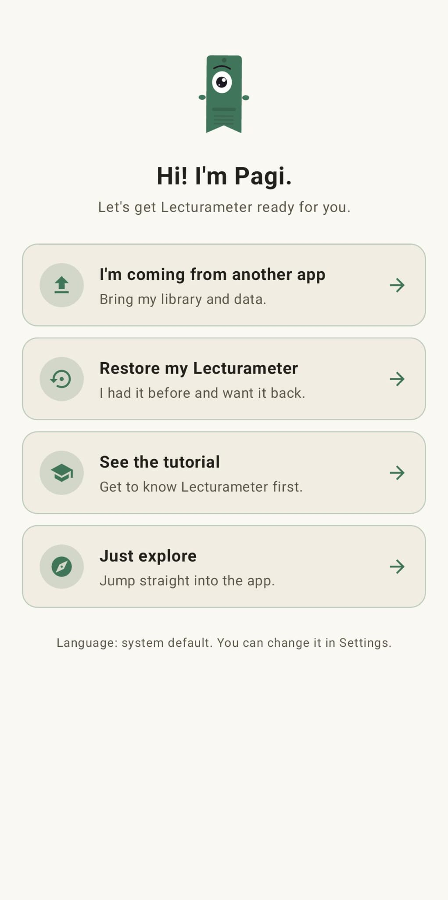
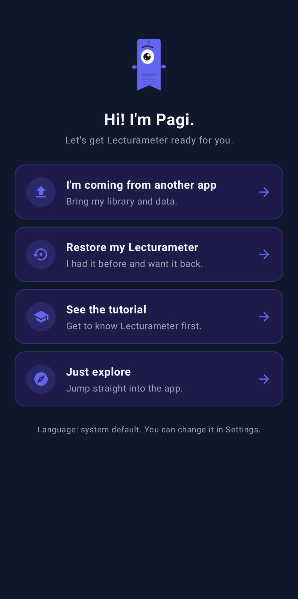
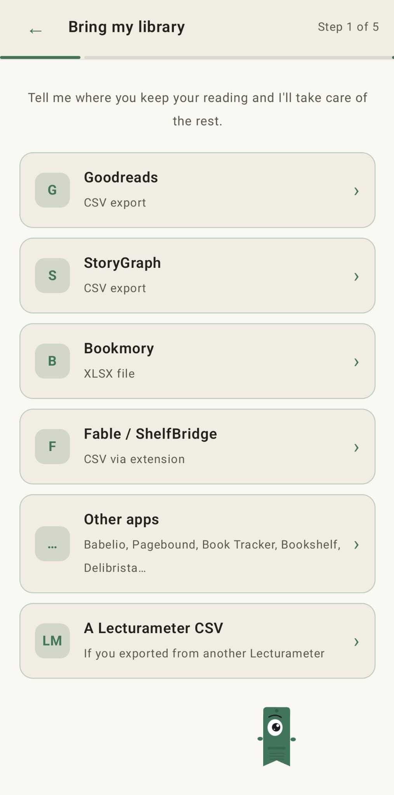
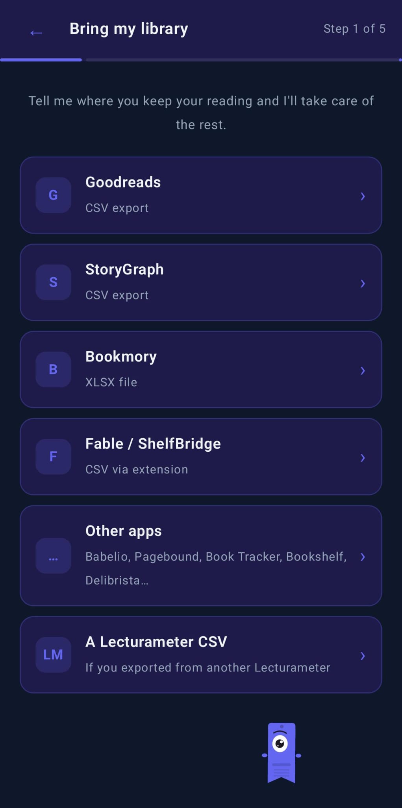

블로그 · 2026-09-14
Goodreads(그리고 StoryGraph, Bookmory, Fable…) 서재를 Lecturameter로 가져오는 방법
Lecturameter는 Goodreads, StoryGraph, Bookmory, Fable/ShelfBridge 및 몇몇 다른 독서 앱의 내보내기 파일을 읽습니다. 이 글에서는 하나씩 살펴봅니다.
서재가 있는 곳
이미 다른 곳에서 독서를 기록하고 있고 옮기고 싶다면, Lecturameter는 인기 있는 대부분의 기록 앱에서 내보낸 파일을 받습니다. Goodreads, StoryGraph, Bookmory, Fable(ShelfBridge 확장 프로그램 경유), 그리고 몇몇 작은 앱들입니다. 이 글은 각 출처의 내보내기 단계를 다루므로, 쓰고 있는 것을 골라 단계를 따라 하시면 됩니다.
여기 있는 어떤 것도 Lecturameter 계정이 필요하지 않습니다. 파일은 휴대폰에 있습니다.
가져오기 마법사
Lecturameter를 처음 열면 Pagi가 무엇을 하고 싶은지 묻습니다. 선택지 중 하나가 「다른 앱에서 옮겨 오는 중입니다」입니다. 그것을 고르면 가져오기 마법사로 이동합니다.


마법사는 출처의 목록입니다. 쓰고 있는 것을 탭하고 파일을 건네면 Lecturameter가 구조를 읽습니다. 같은 마법사가 설정의 가져오기에도 있으니 나중에 실행해도 됩니다.


Goodreads (CSV)
Goodreads는 지금도 서재를 내보낼 수 있게 해 주지만, 그 옵션은 숨겨져 있고 데스크톱 사이트에서만 작동합니다. 모바일에는 없습니다.
- goodreads.com 사이트에 접속해 로그인합니다.
- 상단 내비게이션에서 「My Books」를 클릭합니다.
- 왼쪽 사이드바의 「Tools」 아래에서 「Import and export」를 클릭합니다.
- 「Export your books」 섹션을 찾아 「Export Library」를 클릭합니다.
- 잠시 기다립니다. 파일이 준비되면 CSV를 내려받는 「Your export from Goodreads」 같은 링크가 보입니다.
파일은 책 한 권당 한 줄이고 열이 서른 개쯤 됩니다. 중요한 것은 제목, 저자, ISBN, 내 점수, 읽은 날짜, 추가한 날짜, 책장(사용자 지정과 배타적인 것), 그리고 리뷰 텍스트입니다. 비공개 노트는 놓치기 쉬운 「Private Notes」 열에 들어 있습니다.
점수는 반 별이 아니라 온전한 별을 씁니다. 날짜는 「YYYY/MM/DD」 형식입니다. 친구, 댓글, 좋아요, 그룹은 Goodreads에 남습니다. 이것은 Lecturameter의 한계가 아니라, 그저 파일에 들어 있지 않은 것입니다.
StoryGraph (CSV)
StoryGraph도 웹에서 내보냅니다. app.thestorygraph.com에 가서 Settings를 열고, Manage Account를 연 다음 Export 옵션을 사용하세요. 책, 책장, 점수, 리뷰 텍스트, 날짜, 태그가 담긴 CSV를 받게 됩니다. Lecturameter는 이것을 바로 읽고 필드를 대응시킵니다.
Bookmory (XLSX)
Bookmory에서 Settings를 열고, Backup을 연 다음 「Export to Excel」을 선택합니다. 책, 점수, 독서 세션이 따로 시트로 나뉜 .xlsx를 받게 됩니다. Lecturameter는 xlsx를 바로 읽으므로 변환할 필요가 없습니다.
Fable / ShelfBridge (확장 프로그램을 통한 CSV)
Fable 자체에는 내보내기 버튼이 없습니다. 커뮤니티 프로젝트 ShelfBridge는 Fable 데이터를 읽어 Fable 호환 CSV를 만들어 주는 브라우저 확장 프로그램입니다. Lecturameter는 마법사의 Fable / ShelfBridge 칸에서 그 파일을 받습니다.
Book Tracker (CSV)
Book Tracker를 열고 Settings > Export로 가서 CSV를 고릅니다. 책, 점수, 날짜, 책장이 담긴 파일을 받게 됩니다. 그것을 마법사의 Book Tracker 칸에 넣으면 Lecturameter가 읽습니다.
다른 앱
마법사에는 Babelio, Pagebound, Bookshelf, Delibrista 같은 앱을 위한 「다른 앱」 칸도 있습니다. 쓰고 있는 앱이 CSV나 XLSX를 만들 수 있다면, Lecturameter가 구조를 자동으로 감지해 봅니다.
인식되지 않는다면 대안은 간단합니다. 스프레드시트에서 파일을 열고, 제목, 저자, 점수, 날짜, 책장 열만 남기고 CSV로 저장한 다음 Goodreads로 가져오는 겁니다. Goodreads 리더가 그중 가장 관대합니다.
넘어오는 것, 넘어오지 않는 것
모든 출처에서 같은 것들이 넘어옵니다. 책, 책장, 점수, 날짜, 그리고 개인 노트나 리뷰입니다.
모든 서비스에서 같은 것들이 남기도 합니다. 친구, 댓글, 좋아요, 그룹, 팔로우입니다. 이것은 내보내기 파일 자체의 한계이지 Lecturameter의 한계가 아닙니다. 파일에 처음부터 없었으니 옮길 것이 없습니다.
가져온 뒤
처음 실행할 때 마법사를 건너뛰었다면, 가져오기는 설정의 가져오기에도 있습니다. 파일에 있는 책장을 읽고 어느 것을 가져올지 묻습니다. 점수, 날짜, 노트는 책과 함께 옵니다. 서버로는 아무것도 가지 않습니다. 서재는 휴대폰에 자리 잡습니다.
Lecturameter 써 보기
Google Play에서 받기 App Store에서 다운로드
함께 보기: 나는 정말 얼마나 빨리 읽을까? · 독서 시간일까, 페이지일까 · Goodreads 대안 도서 카탈로그